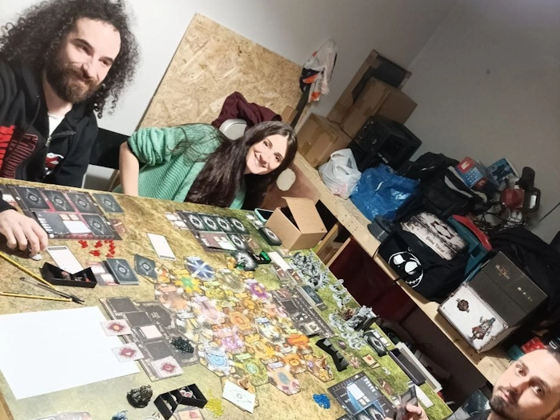
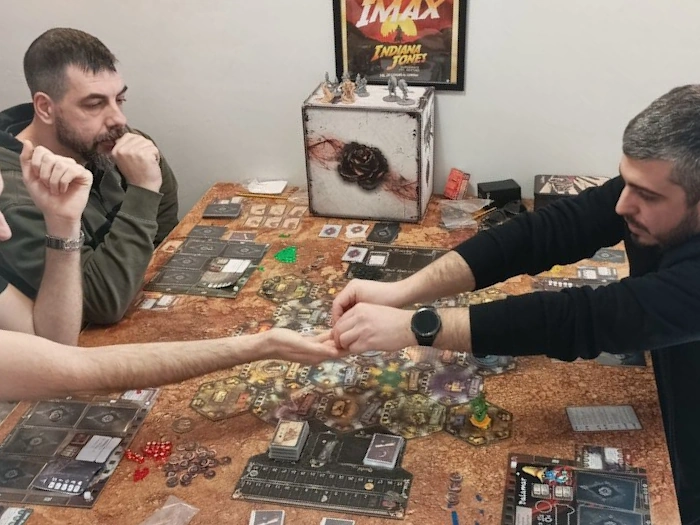

Ci sono poche cose che possono costringermi ad alzarmi alle quattro di mattina di un giorno festivo, ma da sabato 30 marzo,
ce n’è una in più: un torneo fuori porta di Black Rose Wars!
Premetto che io a questo torneo neanche
ci dovevo andare, preso da innumerevoli impegni lavorativi sentivo proprio la necessità di riposare, ma alla fine la voglia
di entrare questo ambiente elettrizzante e conoscere questa fantastica community ha avuto il sopravvento! Così mi
ritrovo una sera a pensare al mazzo e al mago da portare al torneo; non conoscendo minimamente il meta la tentazione di
puntare tutto su illusione è forte per il semplice fatto che si tratta della mia scuola preferita, ma tra le scatole
dell’ancora sigillato Rebirth sento la vocina di Prospero che mi spinge verso un’altra via.
Assemblo quindi una libreria incentrata sul piazzamento dell’instabilità per distruggere le stanze sfruttando la regola
del bersaglio fittizio, a cui aggiungo elementi della scuola d’illusione per avere maggiore controllo sulle stanze e versatilità
(tramite Andromeda), e qualche trappola per arrotondare i punti fatti. Sembra un’idea simpatica: quindi partiamo!
Sveglia, come ho detto prestissimo, mezz’ora di macchina, treno per altre tre ore e mezza, altri venti minuti di macchina
(gentilmente offerti) e finalmente arriviamo! L’atmosfera è subito sensazionale! Siamo stati accolti all’interno
di una location incredibile, messa a disposizione dalla Ludic Roma, ricolma di gente appassionata di questo gioco e
anche dallo staff della Ludus Magnus Studio. Poche ciance e si comincia subito a giocare!
Non mi dilungo tanto sulle singole partite o sulle strategie utilizzate visto che probabilmente, se stai leggendo questo
report, sai già come funziona il gioco; ma voglio dire che il formato del torneo aggiunge un’ulteriore profondità al gioco
ed eventi come questo ti danno la possibilità di confrontarti, sul campo e fuori, in ambienti con modi di giocare differenti
da quello con cui si è abituati. Complessivamente, quindi, ho avuto l’impressione di trovarmi in un ambiente fresco e frizzante,
con sicure potenzialità di crescita che porterà grandissime soddisfazioni a chiunque ci entrerà!
Concludo Ringraziando tantissimo Andrea, Paolo che ci ha dato uno strappo dalla stazione e senza il quale avremmo perso il
treno del ritorno, i ragazzi della Ludus, tutti i miei avversari e i partecipanti al torneo e soprattutto Gianluca
che mi ha accompagnato e fatto in modo che tornassi a casa vivo! Conto di rivedervi tutti in futuro e chissà,
forse di avervi ospiti ad un prossimo evento dei Giochi in Villa!
Il gioco competitivo di Black Rose Wars differisce rispetto a quello serale sotto alcuni aspetti, il più importante dei quali è la
creazione della propria libreria. Infatti, anziché scegliere all’inizio della partita uno dei due grimorii di sette carte indicati sul retro
di uno dei tarocchi delle scuole di magia e poi aggiungervi carte da riserva comune (libreria), al giocatore viene chiesto di comporre la
propria libreria di trentasei carte. Ci sono alcune limitazioni che obbligano ad avere almeno un certo numero di tipologia di magia,
oppure altre che non consentono di superare una certa soglia. In questo modo, il giocatore ha a possibilità di creare una riserva
d’incantesimi che si adattano perfettamente al suo stile di gioco ed anche al proprio mago che, come per la libreria, può essere
personalizzato tramite la spesa di punti talento al fine di ottimizzare la propria strategia. Il risultato finale è un gioco
molto asimmetrico che pone ancora più l’accento sulla sua parte di deckbuilding.
Per il torneo di Roma, ho cominciato a costruire la mia libreria con l’idea di distruggere quante più stanze possibile.
Ho scelto questa strada perché, a differenza di Black Rose Wars Rebirth, le stanze del gioco base non prevedono una classifica
o punti per chi ha contribuito alla sua distruzione e questa è un’arma a doppio taglio. Da un lato, se riesci ad ottenere la
maggioranza dei punti, non devi dividere i punti della stanza con nessuno, dall’altro invece, se non ce la fai hai sostanzialmente
sprecato risorse. Dunque mi sono concentrato sulle carte che mi consentivano di piazzare instabilità e ho scelto come mia
scuola principale Distruzione, spesso impiegata per sconfiggere gli avversari, perché oltre a piazzare instabilità mi consentiva
di partecipare alla classifica dei danni durante l’uccisione di un mago e, quindi, di fare qualche punto anche durante la partita.
Alcune magie chiave per la mia strategia sono state: Esplosione Oscura, per la sua fortissima abilità di convertire fino a tre
instabilità in una stanza e Freccia Instabile, per la versatilità con cui semina instabilità in stanze differenti e mi consente
di minacciare più stanze grazie alla regola del bersaglio fittizio (questa regola è stata infatti alla base di numerosi ragionamenti
e permette di scegliere come bersaglio di un incantesimo un nemico immaginario che non si trova nella loggia, che consente però di
risolvere quanto più testo possibile di una carta).


Per necessità e regole di torneo ho poi completato la libreria con carte prese
dalla scuola di Illusione. La prima carta che ho inserto è stata Andromeda, che mi avrebbe dato accesso all’omonimo costrutto in
grado sia di attivare stanze (sopperendo quindi alle mie poche attivazioni dato il talento scelto, come spiegherò dopo), sia di
rimuovere un cubetto instabilità nella sua stanza durante la fase di evocazioni. Quest’ultimo effetto è importantissimo per il
mazzo, in quanto evita sia la ricostruzione di stanze da parte degli avversari, sia mi consente di riprendere in mano instabilità
seminati in stanze in cui non ha senso competere per la distruzione, garantendomi quindi maggiore controllo sulle mie risorse.
Il lato verso della carta, in aggiunta, consente di lanciare una mangia dalla mano utilizzando come punto di origine Andromeda
stessa, questo vuol dire che posso disporre della carta giusta al momento giusto (se il costrutto è ancora in gioco), e ha il beneficio
di causare instabilità aumentando quindi la rapidità con cui le stanze di distruggono. La distruzione delle stanze, tuttavia, raramente
è da sola sufficiente per vincere le partite a Black Rose Wars, per cui ho inserito alcune trappole e magie contingenza che mi permettano
di capitalizzare sulle azioni avversarie e tenere il passo in classifica. Molto importanti in tal senso sono Imitazione e Miraggio Arcano,
con quest’ultima che può rivelarsi piuttosto preziosa se disposta nello spazio della magia rapida e pronta ad essere attivata al momento più propizio.
(Una “menzione d’onore” la merita Fuoco del Destino, una magia contingenza di Distruzione che permette di scartare un evento in gioco
per guadagnare due punti. Semplice e diretta è una splendida magia che consente sia una piccola entrata di punti potere, sia la rimozione
alcuni eventi che permettono all’avversario di convertire le tue instabilità a seguito del piazzamento delle sue)
A completare il gameplay ho scelto un mago con un singolo talento: incanalare, che permette, al costo di un’azione fisica, di piazzare
instabilità prima o dopo aver eseguito un movimento. Si tratta, secondo me, di un’abilità molto forte che, anche se da un lato m’impedisce
di attivare la stanza, dall’altro velocizza moltissimo la strategia con cui ottengo buona parte dei miei punti: dunque per me si tratta
di uno scambio più che equo. Ho pensando a lungo se prendere poi altri talenti come trimagia, costruttore o creatore, ma alla fine ho
preferito non sacrificare troppo delle statistiche del mago, non sapendo ancora bene cosa aspettarmi dal torneo!
 RACCONTI DEL GIV
Il torneo di Black Rose a Roma
RACCONTI DEL GIV
Il torneo di Black Rose a Roma